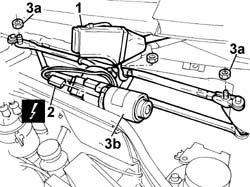

5050B38 windscreen wiper assembly - r+r or repair
- Path
- Procedures > 50 AUXILIARY UNITS > 5050 SCREEN WASHERS AND HEADLAMP WASH/WIPE > 5050B windscreen wash/wipe > 5050B38 windscreen wiper assembly - r+r or repair
- Kind
- repair procedure (removal / refitting; the operation number is the code)
- Applies to
- all engines; all production periods
- Interactive page
- https://sloeber94.github.io/elrnDB-fDbl/en/#/2584863
Applies to: all engines; all production periods
 Removing
Removing
 Refitting
RefittingDisconnect the battery negative terminal.
Op. 5050B34 WINDSCREEN WIPER ARM/S COMPLETE WITH BLADE - R+R
Op. 7055A18 L/H OR R/H SIDE RUBBING STRIP (ONE) FOR FRONT DOOR - R+R
Position the special protective covers on the bodywork.
1. Lift up the plastic protection for the electric motor.
2. Disconnect the electrical connection for the windscreen wiper motor.
Name | Connector | |
|---|---|---|
2 | Windscreen wiper motor |
3. Undo the fixing nuts (3a) and remove the front windscreen wiper assembly (3b).

Applies to: all engines; all production periods
Refitting
RemovingPosition the front windscreen wiper assembly and secure it using the nuts.
Lift up the plastic protection for the windscreen wiper motor and connect the electrical connector.
 | Name | Connector |
|---|---|---|
- | Windscreen wiper motor |
Remove the protective covers from the bodywork.
Op. 7055A18 L/H OR R/H SIDE RUBBING STRIP (ONE) FOR FRONT DOOR - R+R
Op. 5050B34 WINDSCREEN WIPER ARM/S COMPLETE WITH BLADE - R+R
Connect the battery negative terminal.
Topics linked from this page (3)
- 5050B34 windscreen wiper arm/s complete with blade - r+r
- 7055A18 Windscreen base TRIM - R.R.
- N015 WINDSCREEN WIPER MOTOR